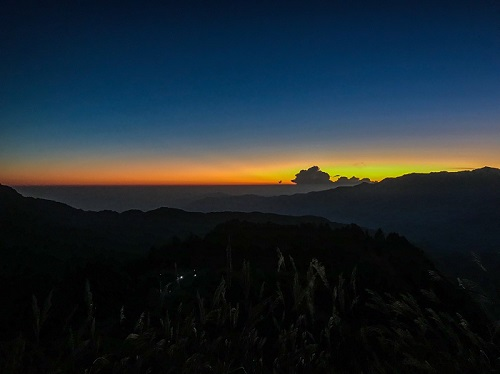
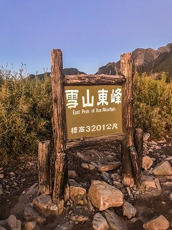
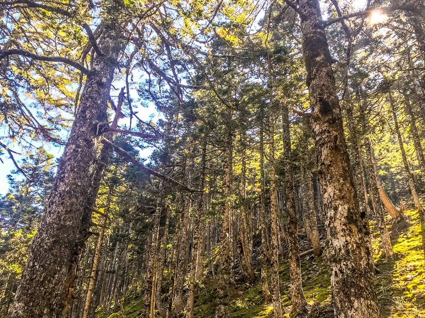
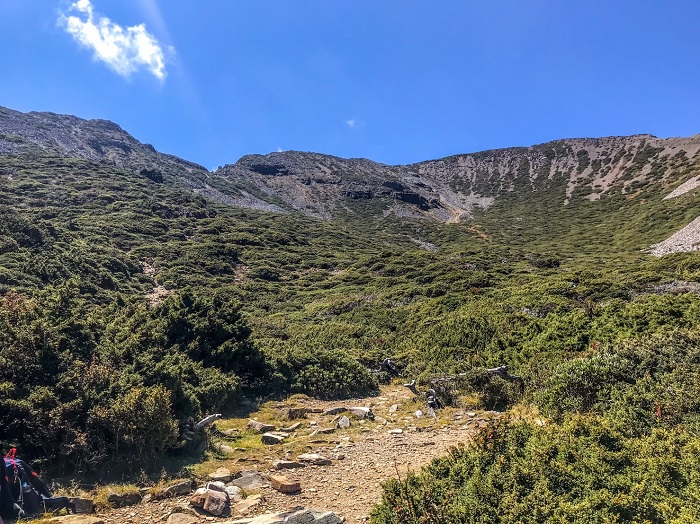
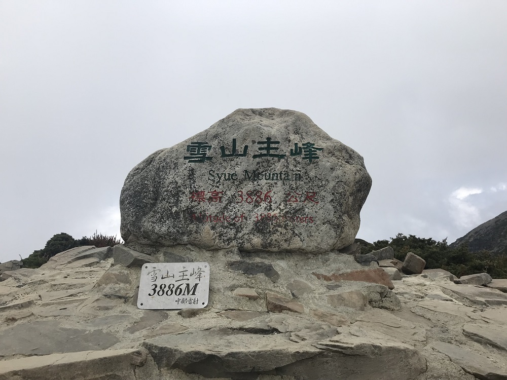
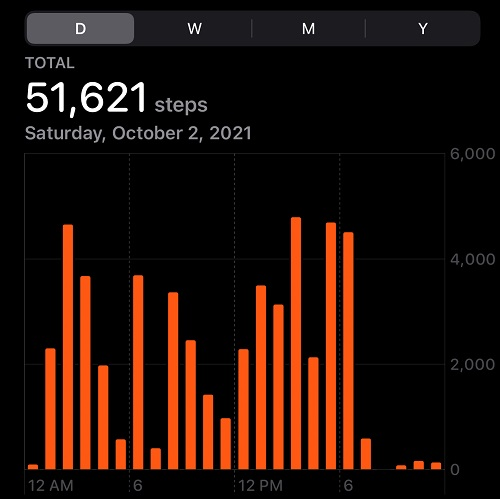

走吧，雪山單攻

目錄
雪山，是我人生中的第一個百岳。對於一個登山小菜雞來說，第一次爬百岳就挑戰雪山單攻真的是很不怕死🤣
單攻路線
先簡單說一下整趟單攻的路線：
來回總共21.8公里，爬升高度1746公尺
雪山登山口→（2K）→七卡山莊→（3K，中間有哭坡）→雪山東峰→（2.1K）→三六九山莊→（2.7K，中間有黑森林）→雪山圈谷→（1.1K）→雪山主峰→（1.1K）→雪山圈谷→（2.7K）→三六九山莊→（2.1K）→雪山東峰→（3K）→七卡山莊→（2K）→雪山登山口
回到目錄
路程時間
接下來，來介紹我們的路程：
抵達時間都是大概取整數時間
我們整趟路程總共花費了17.5小時，但由於我們這團的人都是 登山新手，時間僅供參考🙇♀️
10/1, 2021(五)
- 20:00 抵達距離登山口車程一小時的民宿，稍作休息
- 23:30 開車前往雪山登山口
10/2, 2021(六)
- 00:30 抵達雪山登山口，穿戴裝備/上個廁所
- 01:30 開爬囉
- 02:50 到達七卡山莊，稍作休息/上個廁所
- 04:10 抵達哭坡沒做停留，繼續上東峰
提個外話，其實哭坡沒有到很哭，別被他的名子嚇到了🙊
但還是要注意自己的身體狀況，不要一次衝太快，免得高山症發作
- 05:05 抵達雪山東峰，等待日出


- 06:15 從東峰出發，繼續前往主峰的方向
- 07:10 抵達三六九山莊，在這邊稍作休息，吃個早餐消化一下
- 08:00 從三六九山莊出發，繼續前往主峰的方向
- 09:30 中間黑森林的地方走走停停，拍拍照/吃東西補充能量

- 10:30 抵達雪山圈谷，稍作休息/拍照，準備上雪主的最後一哩路！

- 11:30 抵達雪山主峰🏔️🏔️🏔️🎉🎉🎉
這邊比較不幸運的地方是，在我們登頂的同時，開始起霧，照片拍起來是一片白牆，但其實實際上還是看的到遼闊的風景

- 12:30 開始了持續的下坡地獄😂
這邊特別說一下，從雪主下圈谷這段真的很要命，才短短的1.1K，就讓我們膝蓋吃不消了‧‧‧ 如果膝蓋不好的朋友，記得要帶護膝，或是止痛藥喔！
-
15:10 回到三六九山莊，稍作休息/上廁所/舒緩一下膝蓋
-
16:40 到哭坡稍作停留，膝蓋真的太痛啦！
-
18:00 回到七卡山莊，膝蓋已快報廢，這時天色也已經快全黑了，拿出頭燈繼續趕路
-
19:00 回到雪山登山口啦🎉🎉🎉
後來臨時找了一間可以泡溫泉的民宿(汽車旅館XD)，好好的放鬆，紓解一整日的疲勞♨️
回到目錄
我的初登百岳心得
剛下山時：
真的沒事不要在衝動時做決定‧‧‧我的膝蓋‧‧‧
睡醒隔天：
下次要單攻哪座山勒🤣🤣🤣
其實攻完雪山的當下，滿腦子都只覺得，當時自己一定是瘋了才答應友人的邀約；下次一定要抽到山屋再去，等等的想法。但在泡過溫泉睡了一覺之後，除了滿滿的成就感，心中已經開始期待與規劃下次的百岳行。
常常有人問我，為什麼會喜歡上爬山，為什麼要爬百岳，套句知名登山家George Mallory的話，
Because it’s there.
好啦，下次還會再挑戰單攻的🙈
另外提個外話，當天看了iphone的步數紀錄，竟然有5萬多步，有史以來最多的一天XD

回到目錄
我的初登百岳行前訓練與準備
👉行前訓練
對於沒有爬過百岳的我們這些菜雞來說，行前訓練變得格外重要。我們利用了4個周末的時間，爬各種郊山來訓練體力。
以下地點有機會，我會再打成文章稍作分享🤣
1. 北海岸-鼻頭角步道
這個完全是超級輕鬆的郊遊行程，整趟不用兩小時就能走完，其實就是去看看風景，也順便看看彼此的體力如何。
2. 七星山主東峰+擎天崗
這個路線其實對要爬百岳的朋友來說是非常輕鬆的，但當時我們還鐵腿了兩天😂
3. 七星山主東峰來回兩趟
朋友聽到我們這個訓練，會有稍微嚇到，但老實說，七星山來回三趟都比不上雪山單攻的強度😂
4. 內湖-金面山
其實來爬金面山這周已經是要爬百岳的前一周了，很多前輩都建議前一周要休息。但腳癢的我，還是來爬座小山活動一下筋骨。
以我們這種訓練方法，一定是還不夠格去爬百岳，甚至是單攻。如果有新手朋友想挑戰的話，還是建議先去爬爬中級山訓練一下。
👉行前準備
最重要的就是申請通行證了吧，那這邊我就不贅述了。我就稍微分享一下我們都準備了什麼東西。
由於我們是單攻，所以睡袋/爐具那些就不在我們的清單內
-
頭燈
-
登山杖+登山鞋
-
足夠的水(我個人是帶1000cc運動飲料+1000cc的水)
-
稍微厚一點，方便攜帶的外套(中途休息身體冷掉時會冷)
-
少許零錢與證件以備不時之需
-
高山症的藥(我們是吃丹木斯，我是一次吃半顆/12hr)
副作用為利尿+手麻腳麻，建議開爬前24hr吃
-
戴太陽眼鏡與防曬用品(山上紫外線強)
-
保暖帽/遮陽帽
-
雨衣(山上天氣瞬息萬變)
-
塑膠袋(要把自己的垃圾帶下山唷！)
-
個人藥品
-
手機下載好離線地圖以備不時之需
-
手套，以免凍傷
-
充足的食物/乾糧
其實我自己到山上是都沒有食慾的，但還是要吃東西補充能量喔！
另外，換洗衣物就看自身需求。
回到目錄
結語
整趟雪山單攻行程，對我來說是愉快的。下次也會想再挑戰看看別的百岳單攻(可能是玉山🤣)
但大家一定要衡量自己的實力與體力，快快樂樂出門，平平安安回家！
在爬到一半高山症發作，就要停止繼續往上，並慢慢下山了；跟不上他人的腳步，也不要硬跟，一定要用自己的步調，慢慢的去爬🙌
下次見啦，掰掰~
回到目錄